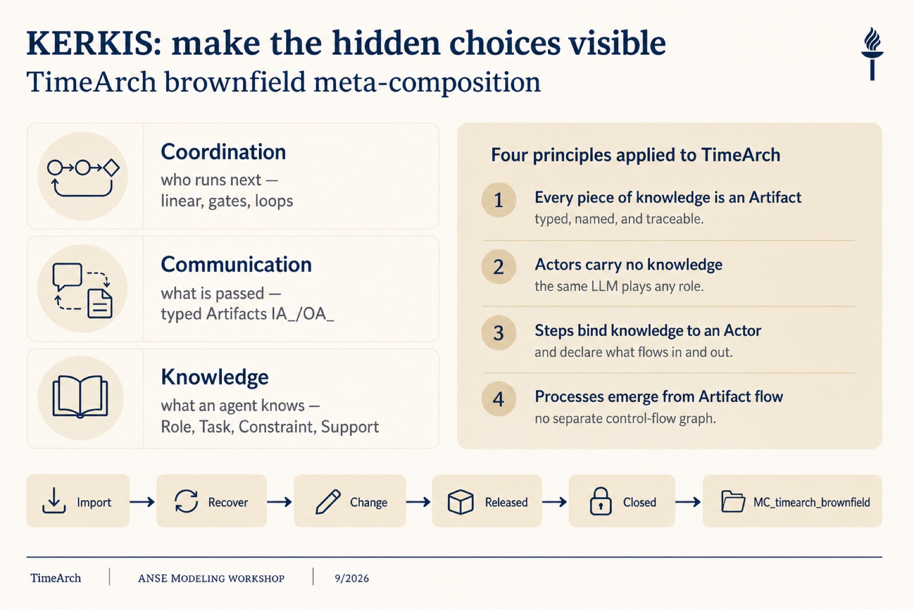
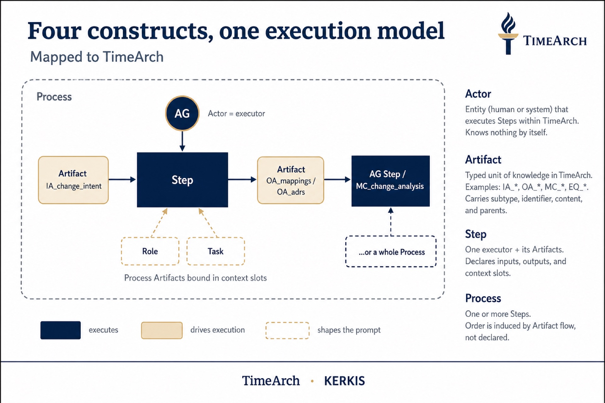
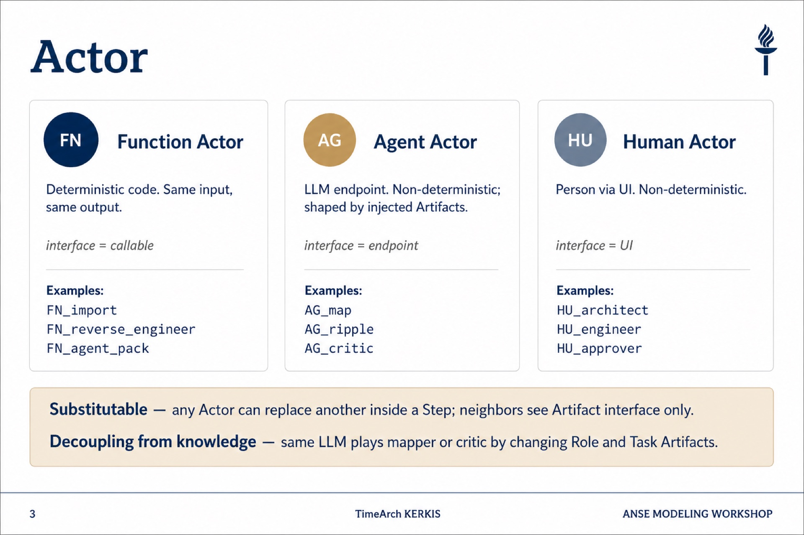
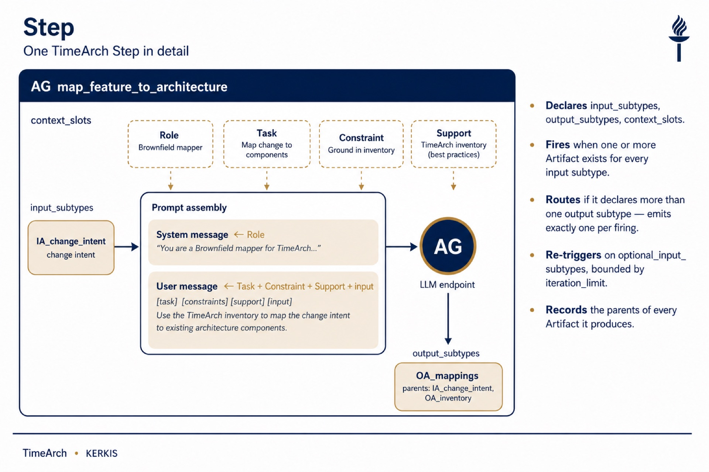
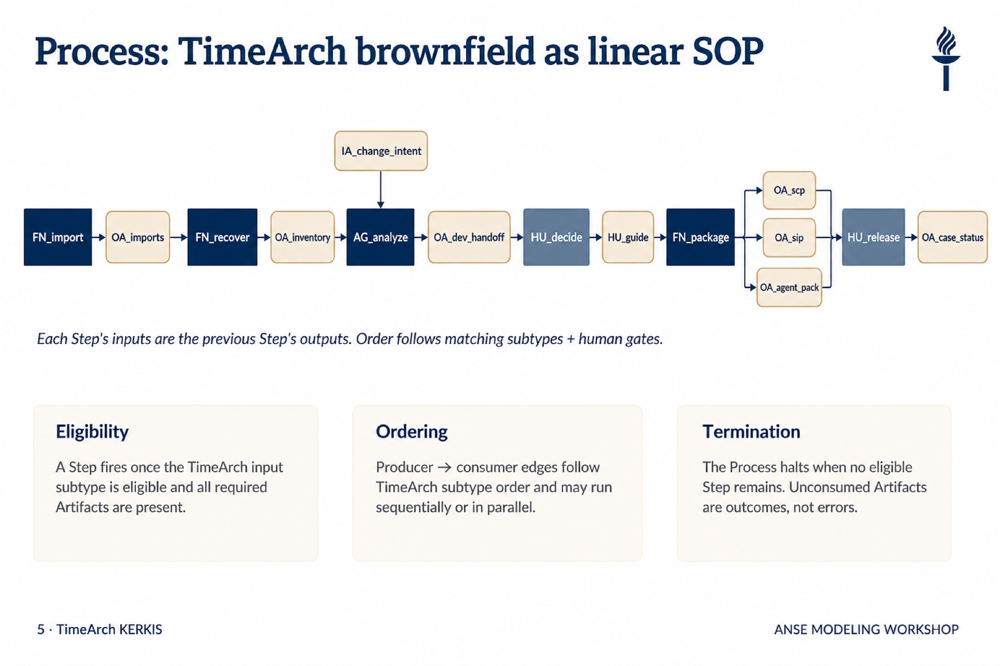
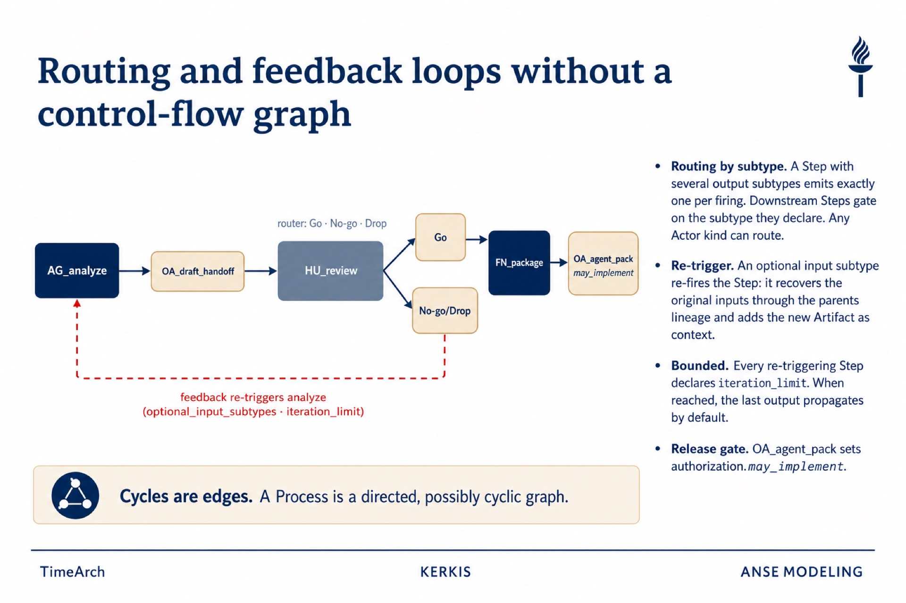
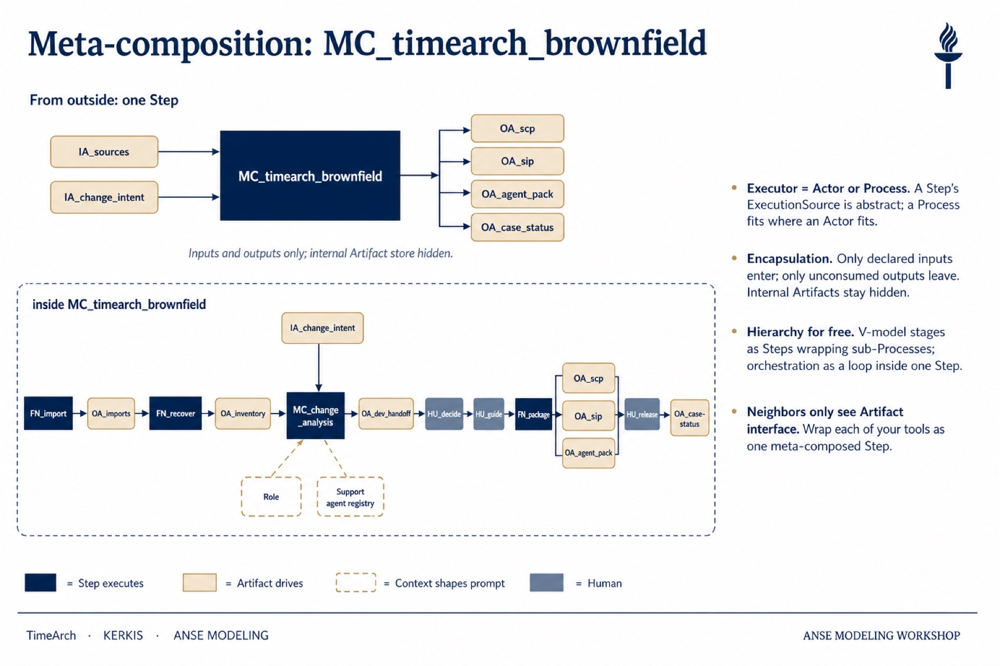
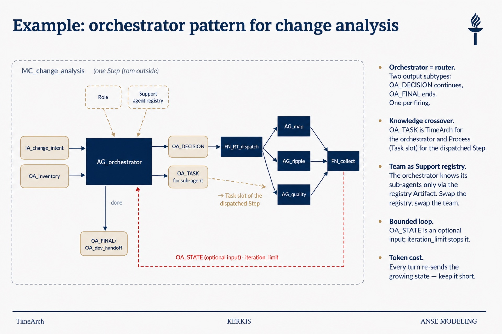

Figure 1 — KERKIS lenses for TimeArch
Coordination · Communication · Knowledge applied to brownfield TimeArch.

Figure 2 — Four constructs, one execution model
Actor · Artifact · Step · Process — Artifact flow induces order.

Mermaid (import to draw.io)
flowchart LR
IA[IA_change_intent] --> ST[AG Step]
AG((AG)) --> ST
Role-.-> ST
Task-.-> ST
ST --> OA[OA_mappings / OA_adrs]
ST -.-> Nest[MC_change_analysis]
Figure 3 — Actor kinds
FN · AG · HU — substitutable; knowledge lives in Artifacts.

Figure 4 — AG Step detail
map_feature_to_architecture — context slots, prompt assembly, lineage.

Figure 5 — Linear SOP (brownfield)
Import → Recover → Analyze → Decide → Package → Release.

Mermaid (import to draw.io)
flowchart LR
FN1[FN_import] --> A1[OA_imports]
A1 --> FN2[FN_recover]
FN2 --> A2[OA_inventory]
A2 --> AG1[AG_analyze]
IA[IA_change_intent] --> AG1
AG1 --> A3[OA_dev_handoff]
A3 --> HU1[HU_decide]
HU1 --> HU2[HU_guide]
HU2 --> FN3[FN_package]
FN3 --> A4[OA_scp]
FN3 --> A5[OA_sip]
FN3 --> A6[OA_agent_pack]
A6 --> HU3[HU_release]
HU3 --> A7[OA_case_status]
Figure 6 — Routing and feedback
Go / No-go router; dashed feedback re-triggers analyze.

Figure 7 — FINAL Meta-composition
Outside: one Step. Inside: full brownfield Process. Primary deliverable for the workshop.

Mermaid outside view
flowchart LR
IA1[IA_sources] --> MC[MC_timearch_brownfield]
IA2[IA_change_intent] --> MC
MC --> OA1[OA_scp]
MC --> OA2[OA_sip]
MC --> OA3[OA_agent_pack]
MC --> OA4[OA_case_status]
Figure 8 — Nested orchestrator (change analysis)
MC_change_analysis with dispatcher, sub-agents, and OA_STATE loop.
